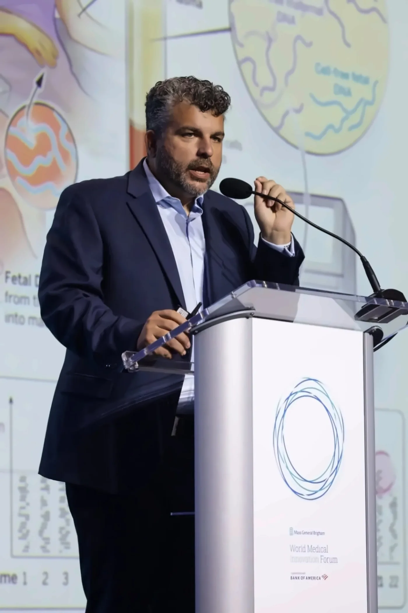

A single blood draw. No procedure risk to mother or fetus.
Non-invasive fetal sequencing
Defining the future of prenatal genomics with non-invasive fetal sequencing (NIFS)
Evaluation of the fetal exome from a single maternal blood draw.
23,000
genes in an exome
7,500
genetic conditions exist
8 years
of R&D to develop NIFS
0
risk to the fetus
FGI's Approach
Every prenatal test today is a trade-off
Non-invasive testing misses most clinically relevant conditions. Invasive testing catches them, but carries real risk.
Non-invasive fetal sequencing
How a sample becomes a result.
The sample is processed and prepared for sequencing within hours of collection.
Sequencing reads the fetal genome at scale, millions of data points per sample.
Analysis resolves the data into a clear genomic result.
Discuss partnershipOur Mission
We're building the infrastructure for a new standard of prenatal care, scientifically rigorous, responsibly deployed.
Partners · Laboratories
Establishing partnerships with commercial laboratories to deliver NIFS to patients globally.
Clinical · Validation
Validated NIFS assay ready for commercialization.
Publication · NEJM
NIFS, as published in the New England Journal of Medicine.

Founders
Founded by leaders in genomic and maternal-fetal medicine.
Three physician-scientists from Harvard, Columbia, and the Broad Institute.
Let's talk.
Laboratories, clinicians, investors and researchers: tell us what you're working on.